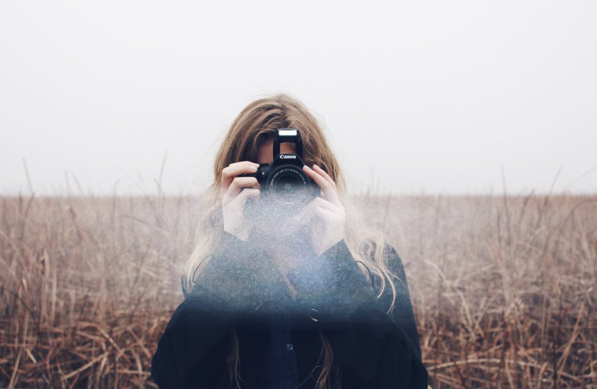

My Outlets
2017 Art Exhibit
My first big painting, "The Awakening" was featured in the Leamington art gallary in 2017 and was just one piece of a project that entailed the use of three different mediums.
Collaborative piece with filmmaker Kenzie Selwood
Our collaborative piece, "To Be" appealed to the pathos of the audience and won first place in the exhibition.
The SouthPoint Sun
For environmental awareness month I wrote for my towns daily newspaper, The SouthPoint Sun. With this responsibility I was required to interview and publish 4 articles to bring awareness and promote the benefits of Leamington's local sustainability organizations.

Whether its infront or behind the camera, my passion for photography is the hobby that introduced me to my creative eye.
In 2016 I attended Top Model Search Canada. This week long contest taught me not only how to properly walk on the runway but introduced me to the beauty of photohraphy as a whole. Concluding the week i was awarded Canada's best commercial model and was signed by BNM Models.